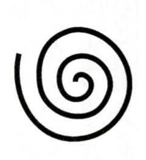
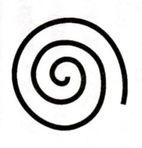
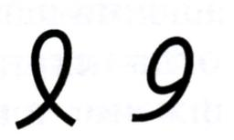
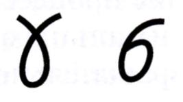

Яй–Осидо: «Зеркало Жизни» Ибадов Я.С.
г. Баку
Психография как метод проявляет информацию в пространстве. А мозг – проявитель этой информации во времени. Человеческое сознание тесно связано с языком природы. Метод психографии проявляет язык психограммы. Язык психограммы реализуется на основании языка природы.Человеческое тело – неотъемлемая часть природы. При этом, включая энергетические тела, человек имеет взаимосвязь с природой. Следовательно, язык природы находится внутри человека на уровне энергетических тел, физического тела до клеточного уровня и до уровня биохимических элементов (ДНК, РНК имеют свою информацию в разных комбинациях аминокислот. ДНК – элементарная частица сознания человека).
«Руки являются активной частью мозга, выступающей наружу» (И. Кант). Рука проявляет язык природы через сознание человека. Значит, рука человека имеет способность проявить информацию, которую человек получает через канал интуиции (например, через шестое чувство, так называемый «третий глаз», т.е. через чакру аджна).
Поступающая энергия со своей информацией создает пиктографический резонанс в головном мозге, который при движении рук проявляется в виде разных символов. Человек, держащий в руке ручку или карандаш, может проявить эти символы на листе бумаги. Даже дети в раннем возрасте обнаруживают эти способности при различных вариантах психологического тестирования. Рисуя тестовые рисунки, они проявляют такую информацию, о которой сами не знают и не подразумевают. Эти факты доказывают, что рука – передатчик информации. В психологии «язык тела» – совсем не новость. Это всего лишь сигнальная система, используемая со времен, когда не было речевого общения [1]. Язык тела – это бессознательные сообщения, посылаемые мозгом и проявляемые в жестах, мимике, движениях рук. Многие путают данное выражение «бессознательные сообщения» с выражением «пондеромоторное письмо». На самом деле, движения рук сознательно контролируются. И в методе психографии психограф (специалист, владеющий способностью метода психографии) сознательно дает разрешение своей руке изображать информацию, которая отображает энергоинформационное состояние человека. Полученное графическое изображение на листе бумаги мы называем психограммой. На психограммах появляются не только разные символы, но и фазовые переходы между символами: когда один символ превращается в другой. Эти фазовые превращения являются очень важными возможностями для дальнейшего изучения человека, природы и вселенной.
С этой целью создан язык психограммы в составе альтернативной психологии Я.С. Ибадова. Язык психограммы – язык природы. Природа общается через язык символов. Таким образом, язык символизма, созданный человечеством, находится в составе языка психографии. Язык психографии изучает эту символику. Он имеет свой стандартный вид, форму, объяснение, как эталон в энциклопедиях символов. Если все символы изучены и созданы энциклопедии, то в чем заключается задача языка психограммы, который изучает язык символов? Необходимо учитывать тот факт, что символы в процессе фазовых превращений изменяются, символ проявляется в разных фазах во времени и пространстве. Каждый символ при фазовых превращениях имеет свое качество информации. Именно это качество дает нам возможность изучать живые системы и проявлять новые символы в новом Времени.
Любая наука имеет цель и задачу. Задача психографии – новые возможности раскрытия яэыка символов. На основании проявленных новых символов определяется степень энергоинформационного очищения живых систем. Каждая нарисованная линия в процессе очищения как пиктографический резонатор взаимодействует с головным мозгом. В результате полученных новых символов создаются новые гармонизаторы, с помощью которых происходит психофизиологическое восстановление живых систем.
На основании языка психограммы получены новые проявления жизненной энергии (или энергии «ци») в виде Ян и Инь– символов – позитивных ключей психограммы (рис 1.1, 1.2).


Они соответствуют спиралям янского и иньского характера (рис 2.1, 2.2).


При объединении ключей с соответствующими спиралями образуется новый символ, названный нами «символ Жизни». На символическом языке рун (В.П. Гоч), позитивный Ян– Ключ соответствует изображению руны «Я», а Инь – руне «Й». При соединении данных символов «Я» и «Й» получается руна «Альго», что означает «зеркало». Также при соединении двух символов Жизни образуется новый символ «зеркало Жизни». Буквенное сочетание «Я» и «Й» представляет собой азербайджанское слово «лук»; на рунном – «осидо». На основании вышеизложенной информации создан новый гармонизатор «ЯЙ– ОСИДО ЗЕРКАЛО ЖИЗНИ» (Я.С.Ибадов, В.П. Гоч). Гармонизатор оказывает преобразующее и гармонизирующее воздействие на биологические объекты и окружающее пространство. Результатом воздействия гармонизатора на объект является восстановление информационных составляющих поля объекта во времени. В основе работы гармонизатора происходит коррекция метаморфоз времени систем на многомерном уровне. Новый гармонизатор гармонично вводит человека в Новое Время. Область применения: медицина, физика, химия, биология, экология, сельское хозяйство, пищевая промышленность и т.д.
Библиографический список Гарнер А., Пиз А. Язык разговора. –М.: Эксмо– ПРЕСС, 2000. Ибадов Я. Психография как метод всестороннего развития новой личности. –Тюмень: изд– во «Истина», 2007.